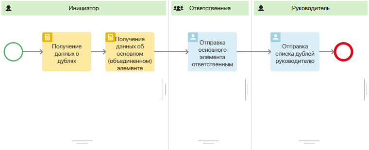
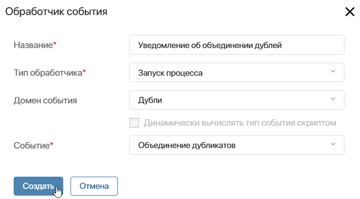
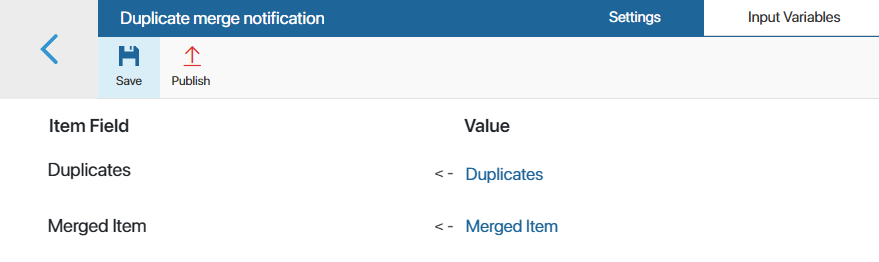

Когда в приложении включён поиск похожих элементов, можно создать обработчик событий, который будет отслеживать объединение дублей и запускать нужные действия через скрипт или бизнес-процесс.
Настройка обработчика событий осуществляется в рамках создания пользовательского модуля. В обработчик можно передавать ссылку на основной элемент и запись, отмеченную дублем, а также свойства из их контекста.
начало внимание
Обработчик событий для объединения одинаковых записей в приложении доступен при активации одного из платных решений CRM, в котором включён поиск дублей. Создавать модуль и настраивать в нём обработчик могут только пользователи, входящие в группу Администраторы.
конец внимание
Пример обработчика с отслеживанием объединения дублей
Рассмотрим пример создания обработчика событий для приложений раздела CRM, в которых включён поиск дублей.
Например, пользователь находит два элемента с одинаковыми данными и объединяет их в одну запись. Добавленный обработчик события фиксирует это действие и запускает процесс. В его ходе с помощью скриптов передаются данные об основном и объединённом элементе. Затем ответственному менеджеру и его руководителю отправляется задача ознакомления со списком объединённых дублей.
Для настройки обработчика выполните следующие действия:
- Перейдите в раздел Администрирование > Модули и создайте пользовательский модуль.
- В настройках модуля перейдите на вкладку Процессы и добавьте бизнес-процесс, который будет выполняться каждый раз после объединения записей-дублей.
Для нашего примера добавим процесс Уведомление об объединении дублей и настроим его схему следующим образом:

- В дизайнере бизнес-процессов перейдите на вкладку Контекст и добавьте переменные, в которые обработчик в результате слияния дублей передаст ссылки на основной элемент и объединённые записи:
- Объединенный элемент — свойство типа Произвольное приложение (один);
- Дубликаты — свойства типа Произвольное приложение (несколько).
- На вкладке Схема разместите два блока Скрипт и задайте в них функции, с помощью которых будет определяться основной элемент и его записи-дубли.
1. Пример скрипта для получения данных о дублях
async function getDoubles(): Promise<void> { |
2. Пример скрипта для получения данных об основном (объединённом) элементе
async function getMainElement(): Promise<void> { |
- Поскольку участники процесса будут определяться в его ходе, на схеме процесса создайте динамические зоны ответственности:
- для отвечающих за элемент приложения сотрудников;
- для руководителя отдела продаж.
- Чтобы сотрудники могли ознакомиться со списком дублей, найденных обработчиком события, в зонах ответственности разместите блоки Задача и добавьте на форму задачи переменные Объединенный элемент и Дубликаты.
- Сохраните и опубликуйте процесс.
- В настройках модуля перейдите на вкладку Обработка событий. Добавьте обработчик, указав: название, домен события — Дубли, событие — Объединение дубликатов, тип обработчика — Запуск процесса.

- На открывшейся странице настроек обработчика событий укажите процесс, созданный ранее внутри пользовательского модуля.
- Перейдите на вкладку Входные переменные и назначьте источники данных для переменных из контекста процесса в колонке Поле элемента. Для этого сопоставьте их со свойствами события.
Для события Объединение дубликатов предусмотрен набор системных полей (идентификатор события, время выполнения, название объекта, автор и т. д.), а также индивидуальные свойства: ссылка на основной элемент и дубликаты. Для нашего примера необходимо сопоставить переменные Дубликаты и Объединённый элемент.

Обратите внимание, на вкладке Входные переменные отображаются свойства, присутствующие в контексте процесса в момент его привязки к обработчику события. Если контекст процесса был изменён, новые переменные не появятся в настройках обработчика. Необходимо повторно создать и настроить обработчик событий, привязав к нему тот же самый бизнес-процесс.
- На верхней панели страницы настроек нажмите Сохранить и Опубликовать, чтобы активировать обработчик событий.
- Вернитесь на основную страницу модуля и включите его.
Теперь, когда пользователь объединит между собой несколько элементов-дублей, в системе сработает обработчик событий, который запустит настроенный бизнес-процесс. Ответственные сотрудники и руководитель отдела ознакомятся с похожими записями на форме отдельных задач.